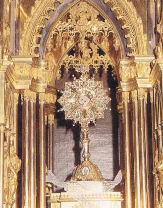
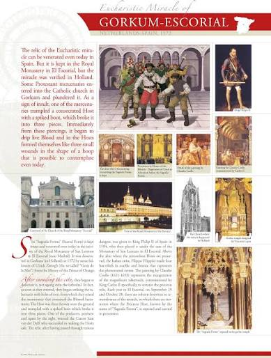
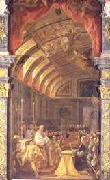
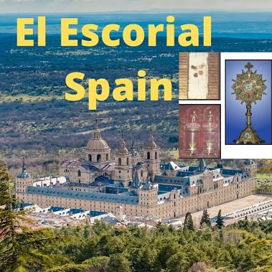

The 1572 Eucharistic miracle of Gorkum-El Escorial occurred when a consecrated Host was trampled and punctured by spikes, causing it to bleed. The Host was later rescued and gifted to the Spanish King, finding a permanent home in the Royal Monastery of El Escorial.
During the religious unrest in Gorkum, Netherlands, Protestant mercenaries trampled a consecrated Host. A soldier's iron-spiked boot punctured the Host in three places, and it immediately began to bleed. The relic was rescued, moved across Europe to ensure its safety, and eventually presented to King Philip II of Spain in 1594.
Known as the "Sagrada Forma," the relic remains perfectly preserved in the sacristy of the Royal Monastery of San Lorenzo de El Escorial. It is enshrined in a spectacular hidden tabernacle and is the subject of Claudio Coello's masterpiece painting, The Adoration of the Sagrada Forma.